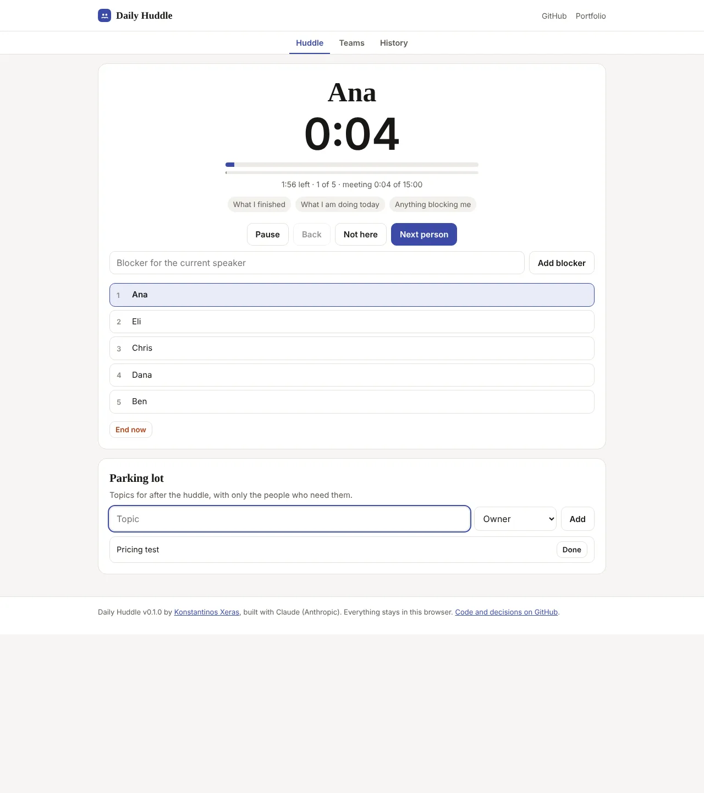

The problem
Facilitators try to keep standups short and fair with good intentions, then give up after a week. The tool should make the right behaviour the default and show the trend over time.

What it does
- Teams. Several saved teams with their own time per person, timebox, prompts and sound.
- Order. Fair rotation, random, alphabetical or team order. Tick who is here.
- Live huddle. Big timer, person and meeting progress, Back, Not here, Next, End now. Keeps the screen awake.
- After. Blockers and parked topics with owners, a summary to paste, and history with length, overruns and who went first.
Decisions
Decision
Fair rotation by default
Whoever went first least often opens. Random shuffle can repeat the same person three days running.
Decision
Visible timer, no cut-off
The timer turns red and suggests parking the topic. The facilitator decides, and History counts overruns.
Decision
History stays local
Names and blockers never leave the device unless the user copies the summary or downloads the CSV.
What I would do next
- Shared history for rotating facilitators.
- Post the summary to a chat channel on request.
- Carry open blockers into the next huddle.
No usage data yet, so no findings. The case study lists the measures I would track.